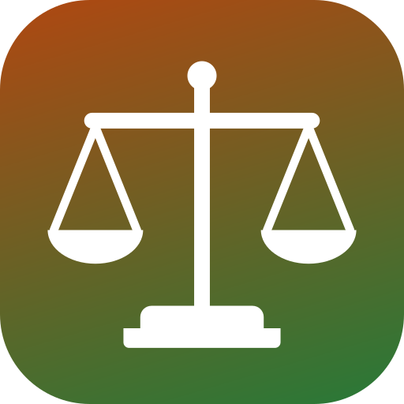
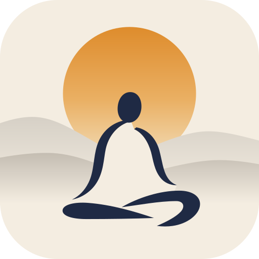

OkayUPSC
Constitution
Thinkers
OkayUPSC
Study sites for the Civil Services
Today
By paper
The sites
☽
What will you study
today
?
/
Try
Article 21
Kesavananda Bharati
Gandhi
Basic structure
Kant
Ethics case studies
Today
Start with a paper
Prelims
GS Paper I · Polity
Practice MCQs
870
MCQs on the most-asked articles
230
Most-asked articles
46
Amendments
106
Essay
Mains · Essay paper
Past essay topics
72
Model paragraphs
45
Model essays
19
Quotations
317
Stories and examples
111
GS-II
Mains · Polity and governance
What the examiners ask
159
Landmark judgments
125
Basic structure and amendment
Centre–State relations
Mind maps and flows
GS-IV
Mains · Ethics
Past questions
257
Case studies
81
Notes by syllabus heading
184
Moral thinkers
91
Open a site

The Constitution of India for Exams
Every article in plain words.
471
articles
125
judgments
870
MCQs
Open the Constitution

Thinkers for UPSC
Ideas and quotations for Essay and Ethics.
91
thinkers
317
quotations
81
case studies
Open Thinkers